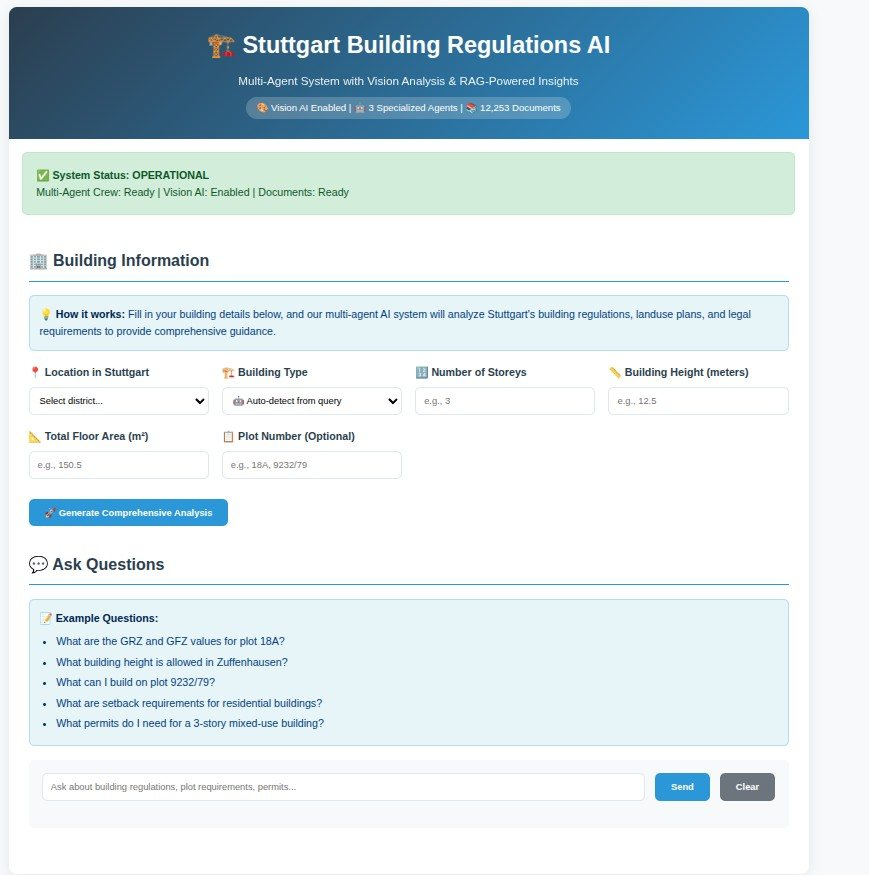

M.Sc. thesis, 2026Masterarbeit, 2026
AI for digital building permitting in StuttgartKI für die digitale Baugenehmigung in Stuttgart
One question, answered from three independent sources: the regulation text, the zoning plan drawing and the official cadastre. Where the three disagree, the system shows no value.Eine Frage, beantwortet aus drei unabhängigen Quellen: dem Vorschriftentext, der Planzeichnung des Bebauungsplans und dem amtlichen Kataster. Wo die drei sich widersprechen, zeigt das System keinen Wert an.
12,701text passagesTextabschnitte55study participantsStudienteilnehmende25benchmark questionsBenchmark-Fragen
- The process was checked with Stuttgart's building law office and city planning office.Der Prozess wurde mit dem Baurechtsamt und dem Stadtplanungsamt Stuttgart abgestimmt.
- Main finding: no single source is reliable enough alone, and they fail in different ways.Zentrales Ergebnis: Keine Quelle ist allein verlässlich genug, und sie versagen auf unterschiedliche Weise.
- Still open: an off-topic answer on 32% of a wider sample of questions.Noch offen: eine themenfremde Antwort bei 32 % einer größeren Stichprobe von Fragen.